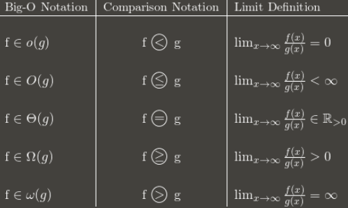

Difference between Big-O and Little-O Notation
What is the difference between Big-O notation O(n) and Little-O
notation o(n)?
Answer
f ∈ O(g) says, essentially
For at least one choice of a constant k > 0, you can find a constant a such that the inequality 0 <= f(x) <= k g(x) holds for all x > a.
Note that O(g) is the set of all functions for which this condition holds.
f ∈ o(g) says, essentially
For every choice of a constant k > 0, you can find a constant a such that the inequality 0 <= f(x) < k g(x) holds for all x > a.
Once again, note that o(g) is a set.
In Big-O, it is only necessary that you find a particular multiplier k for which the inequality holds beyond some minimum x.
In Little-o, it must be that there is a minimum x after which the inequality holds no matter how small you make k , as long as it is not negative or zero.
These both describe upper bounds, although somewhat counter-intuitively, Little-o is the stronger statement. There is a much larger gap between the growth rates of f and g if f ∈ o(g) than if f ∈ O(g).
One illustration of the disparity is this: f ∈ O(f) is true, but f ∈ o(f) is
false. Therefore, Big-O can be read as "f ∈ O(g) means that f's asymptotic
growth is no faster than g's", whereas "f ∈ o(g) means that f's asymptotic
growth is strictly slower than g's". It's like <= versus <.
More specifically, if the value of g(x) is a constant multiple of the value of f(x), then f ∈ O(g) is true. This is why you can drop constants when working with big-O notation.
However, for f ∈ o(g) to be true, then g must include a higher power of x in its formula, and so the relative separation between f(x) and g(x) must actually get larger as x gets larger.
To use purely math examples (rather than referring to algorithms):
The following are true for Big-O, but would not be true if you used little-o:
- x² ∈ O(x²)
- x² ∈ O(x² + x)
- x² ∈ O(200 * x²)
The following are true for little-o:
- x² ∈ o(x³)
- x² ∈ o(x!)
- ln(x) ∈ o(x)
Note that if f ∈ o(g), this implies f ∈ O(g). e.g. x² ∈ o(x³) so it is also
true that x² ∈ O(x³), (again, think of O as <= and o as <)
Suggest
Big-O is to little-o as ≤ is to <. Big-O is an inclusive upper bound,
while little-o is a strict upper bound.
For example, the function f(n) = 3n is:
- in
O(n²),o(n²), andO(n) - not in
O(lg n),o(lg n), oro(n)
Analogously, the number 1 is:
-
≤ 2,< 2, and≤ 1 - not
≤ 0,< 0, or< 1
Here's a table, showing the general idea:

(Note: the table is a good guide but its limit definition should be in terms
of the superior limit instead of the normal limit. For example, 3 + (n mod
2) oscillates between 3 and 4 forever. It's in O(1) despite not having a
normal limit, because it still has a lim sup: 4.)
I recommend memorizing how the Big-O notation converts to asymptotic comparisons. The comparisons are easier to remember, but less flexible because you can't say things like nO(1) = P.